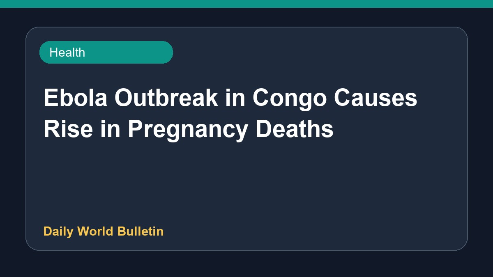

Ebola Outbreak in Congo Causes Rise in Pregnancy Deaths

Fear of the Ebola virus has led pregnant women in the Democratic Republic of the Congo to avoid hospitals, resulting in an increase in fatalities. According to the World Health Organization, the ongoing outbreak involving the Bundibugyo strain is intensifying and spiralling out of control, making it the worst ever recorded in the nation. Authorities note that public anxiety is significantly disrupting essential maternal healthcare access across affected regions. Further details on specific casualty numbers and intervention measures remain limited at present.
Original source: Health News Sources
Ebola Fear Drives Pregnant Women Away From Hospitals, Deaths Rise In Congo - NDTV ↗
Ebola Fear Drives Pregnant Women Away From Hospitals, Deaths Rise In Congo - NDTV ↗